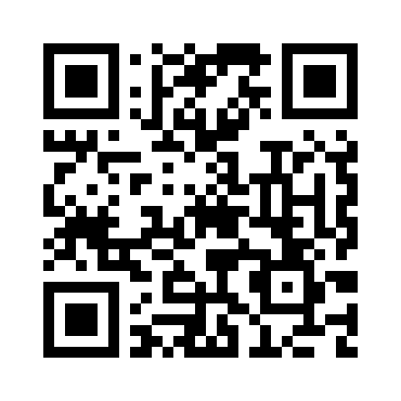

EqualscopeQUICK START
이퀄라이징
압력을 재고 분석하는 순서입니다.
1
연결 후 전원 켜기본체와 튜브를 연결하고 전원 버튼을 약 3초 길게.
2
모드 선택이퀄라이징 · 호흡 훈련 중 이퀄라이징을 선택합니다.
3
영점 보정정확한 측정을 위해, 보정하는 약 5초간 압력을 가하지 마세요.
4
측정[시작] → 코에 대고 이퀄라이징 → [정지].
5
분석[분석]에서 통계·기법 추정·조언을 봅니다.

사용 설명서
기능이 많으므로 정독을 권장합니다.
equalscope.kr/manual.html